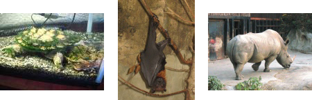
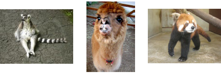
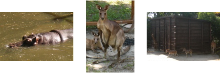

Nagasaki Bio Park – A Return to the Wild
The Bio Park, located on the western side of Omura Bay in the Saikai region, is not your typical zoo. Unlike the layout of many zoos out there, the Bio Park has more of a “World Safari” type atmosphere, and during your tour around the premises you will encounter a vast assortment of wild creatures from all over the globe, many of whom you will have the opportunity to get up close and personal with (if you so wish).
The basic theory behind the Bio Park is that if a space resembling the natural habitat of an animal can be accurately recreated, the animal will feel so at home that a cage won’t be necessary to make it stay put. This makes for an interesting situation where a beaver pond sits a mere 20 meters or so away from a separate pond full of flamingos, and yet of their own accord the animals just magically mind their own business. Sometimes the design is even such that you (being an animal yourself) become a part of the park and can wander around the same area as the animals without being separated by the usual “protections” provided by many zoos. As a bonus there are a number of foodstuffs available for purchase throughout the park that you can distribute as you wish amongst the thankful beasts.
{kind=link}
Of course that method doesn’t work for all the animals living in the Bio Park, and certain types (rhinos, giraffes, snakes, things that might try to eat you) are still sequestered to their own living quarters. Even then though, you are sometimes able to join them in their habitat, which can lead to some exciting encounters indeed. While some folks may be a bit put off by this prospect, for me it was a dream come true to have four monkeys climbing on me all at once as they vied for the dried banana bits I held for them.
{kind=link}
I’ve been to the Bio Park twice now during my stay in Nagasaki, and would gladly go again if the opportunity arose. While it can be a bit of a trek for those who don’t already live in the Saikai area, it makes for a wonderful weekend day trip to check out another area of the prefecture that you may otherwise not get to see. For directions, please refer to the Nagasaki Google Map available here on the blog.
{kind=link}
-Andrew Morris